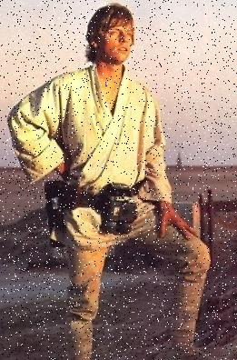
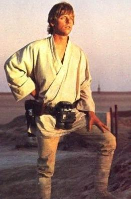

Adam Szczepañski

Przebieg æwiczenia i kszta³t sprawozdania
- Teoria - nale¿y opracowaæ informacje sk±d mog± typowo wynikaæ zak³ócenia na obrazach cyfrowych i analogowych oraz omówiæ wybrane podstawowe metody odszumiania. Dlaczego z punktu widzenia analizy obrazu odszumianie jest istotne?
-
Szum typu sól i pieprz - nale¿y umie¶ciæ na obrazie w losowych miejscach (rand(100) >= 85, 90, 95) piksele bia³e i czarne.
Po lewej u góry znajduje siê obraz oryginalny, po prawej u góry - 5% szumu, po lewej u do³u - 10% szumu, po prawej u do³u - 15% szumu. -
Szum równomierny - nale¿y na obrazie w losowych miejscach (rand(100) >= 85, 90, 95) zmieniæ warto¶æ kolorystyczn± pikseli o losow± warto¶æ z sumy przedzia³ów <-30, -21> i <21, 30>.
Æwiczenie nale¿y wykonaæ na 2 sposoby - zmieniaj±c ka¿dy kana³ koloru
piksela o t± sam± warto¶æ oraz zmieniaj±c ka¿dy kana³ piksela o inn±
losow± warto¶æ z podanego przedzia³u.
Zmiana ka¿dego kana³u o t± sam± warto¶æ, po lewej u góry znajduje siê obraz oryginalny, po prawej u góry - 5% szumu, po lewej u do³u - 10% szumu, po prawej u do³u - 15% szumu.
Zmiana ka¿dego kana³u osobno, po lewej u góry znajduje siê obraz oryginalny, po prawej u góry - 5% szumu, po lewej u do³u - 10% szumu, po prawej u do³u - 15% szumu. - Odszumianie: filtr medianowy - dla ka¿dego piksela nale¿y wybraæ i uporz±dkowaæ rosn±co warto¶ci kolorów pikseli w jego otoczeniu (z nim w³±cznie). Now± warto¶ci± piksela staje siê warto¶æ koloru znajduj±ca siê w ¶rodku listy uporz±dkowanych warto¶ci. Æwiczenie nale¿y przeprowadziæ na zaszumionych opisanymi wy¿ej metodami obrazkach uwzglêdniaj±c otoczenie wielko¶ci 3x3, 5x5 i 7x7. Ka¿dy kana³ koloru piksela rozpatrywany jest niezale¿nie.
- Odszumianie: ulepszony filtr medianowy - dla ka¿dego piksela nale¿y wybraæ i uporz±dkowaæ rosn±co warto¶ci kolorów pikseli w jego otoczeniu (z nim w³±cznie). Now± warto¶ci± piksela staje siê warto¶æ koloru znajduj±ca siê w ¶rodku listy uporz±dkowanych warto¶ci ale tylko wtedy, gdy jego stara warto¶æ znajduje siê w 20% skrajnych pikseli (nie mniej ni¿ 2) z której¶ ze stron uporz±dkowanej tablicy. Æwiczenie nale¿y przeprowadziæ na zaszumionych opisanymi wy¿ej metodami obrazkach uwzglêdniaj±c otoczenie wielko¶ci 3x3, 5x5 i 7x7. Ka¿dy kana³ koloru piksela rozpatrywany jest niezale¿nie.
- Odszumianie: filtr za pomoc± ¶redniej - nale¿y przeprowadziæ operacje analogiczne jak dla filtra medianowego, tyle ¿e tym razem nowe warto¶ci kana³ów koloru piksela bêd± równe warto¶ciom ¶rednim z jego otoczenia (z warto¶ci± koloru piksela w³±cznie).
-
Histogram - nale¿y stworzyæ histogram ka¿dego z kana³ów na
obrazie kolorowym i umie¶ciæ go w osobnych plikach obrazów. Nale¿y
przeprowadziæ równie¿ analogiczn± operacjê dla obrazu w odcieniach
szaro¶ci.
-
Wnioski - nale¿y porównaæ obrazy otrzymane za pomoc± algorytmów
odszumiania i okre¶liæ którymi metodami uzyskuje siê najbardziej
optymaln± jako¶æ obrazu. Kto± metodê uznajesz za optymaln± i dlaczego?